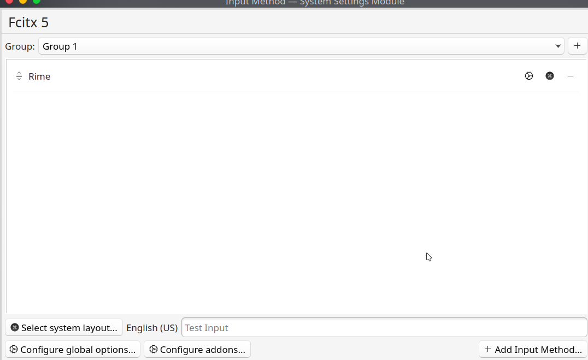
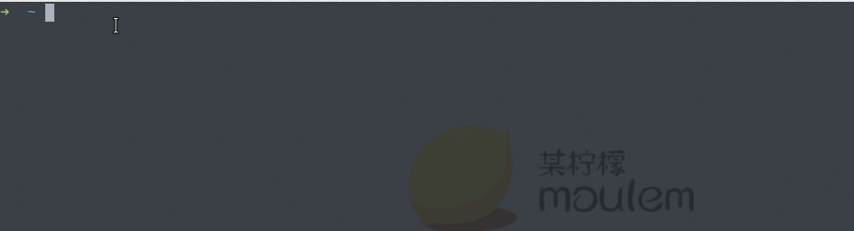
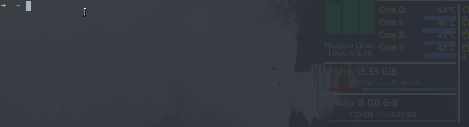

fcitx5-rime 挂接小鹤音形
近几天，在看 Github explore 时意外看到了 fcitx5-material-color，提供了更好看的主题色，并支持单行候选窗显示，于是决定将用了近一年的 fcitx 换成 fcitx5。
顺便简单介绍一下我在 manjaro 上使用已近 2 年多的输入方案 - 小鹤音形。
前言
Fcitx 是一个可扩展的输入法框架，目前支持 Linux 及 Unix-like 的系统发行版。而 Rime 中州韵是一个跨平台的输入法引擎，用户可自定义并设计输入方案。
fcitx-rime 则是为 Fcitx 提供了 rime 的支持，本人目前在 linux 平台下常用的是 fcitx-rime， 而在 windows 环境下，则使用「小狼豪」。
Fcitx5 是 Fcitx 的新一代，相较于旧版 Fcitx4，有了不少性能提升，并提供了许多额外的功能支持。打字体验更流畅且界面更好看了。
fcitx5 安装
由于我使用的是 Manjaro linux，因此，以下安装介绍以 archlinux 的安装方式为例，其他应该也是类似。
1 | sudo pacman -S fcitx5 |
使用 fcitx5-rime 挂接小鹤音形
首先，小鹤音形是在小鹤双拼的基础上，再引入了双形的规则，使得打字更精准化。更多关于小鹤音形的内容详见其官网介绍 - 双形。
💬关于我选择学习和使用小鹤音形的契机：
相信很多人刚接触中文打字时，自然而然地会选择使用全拼，在掌握基本的打字手法后，配合智能输入法的使用，便能很快上手，熟练一段时间后，得益于智能输入法的智能词库，有的人很快就拥有了较快的打字速度。
但对我来说，使用全拼打字有以下两大问题（痛点）：
- 击键次数过多，且容易出错；击键次数越多越容易出错，e.g. 声母+韵母最多可有 6 个字母；
- 必然出现重码，遇到偏僻词可能需要从候选窗中翻非常久，还可能找不到。
于是乎，经一番检索后，我发现了双拼输入方案，它们可以很好的解决问题第一个问题，其实很多智能输入法也早已有了切换双拼输入方案的配置，也存在着比较多的双拼方案可供选择和使用，如自然码、搜狗、微软、小鹤双拼等。但我们很快可以意识到使用双拼不能解决第二个问题。
我选择小鹤双拼方案的主要原因是为了后续能进一步使用双形，即在掌握小鹤双拼后，过渡去学习双形。而且小鹤音形的小字根规则还算简单，花个几分钟看一下规则，后续在练习和实践中慢慢掌握即可，如官网推荐的 500 单字练习等，另外也有相应的微信小程序可以让我们学习双形。熟练之后，打字时则完全可下意识快速地打出想要的字词。
挂接文件
从小鹤音形官网上提供的网盘下载，在小鹤音形挂接第三方平台目录下，选择相应平台的挂接文件, e.g linux 平台可下载「小鹤音形"鼠须管”for macOS.zip」。
压缩包下载完成后，进行解压，其中包含的文件清单如下：
1 | ├── MAC鼠须管小鹤音形挂接说明.txt |
使用这些官方提供的挂接文件，我们可很简单地参照MAC鼠须管小鹤音形挂接说明.txt 的部署说明，将 rime 目录中的所有文件复制到 /usr/share/rime-data 目录下，便能完成了 rime 挂接小鹤音形。
配置 fcitx5
完成小鹤音形挂接文件部署后，对 fcitx5 服务进行重启，然后打开配置，添加 rime 输入法。

完成配置后，便开始愉快地使用小鹤音形了😊。
fcitx5 主题设置
默认情况下，我们只能使用 fcitx5 内建主题，为使用其他主题配色，我们可从 github 等进行搜索，找寻 fcitx5 主题，并按照安装指引进行相应主题配置。例如，本文开头提到的 fcitx5-material-color 主题就挺不错的🙂。
总结
不知不觉我使用小鹤音形已经较长一段时间了，如今打字时已不早像最初刚接触音形规则时，打一些不熟悉的字可能需要短暂的停顿来思索要打的字该怎么打。在上手小鹤音形一段时间后，手指习惯打音形的节奏后，打字体验便得到了质的飞跃，现在反而不习惯使用全拼了，在没有音形方案时，也会退而求其次选择小鹤双拼方案。使用小鹤双拼方案至少还能解决我遇到的第一个中文输入问题——击键次数过多，容易出错。
下面的几个 gif 图主要展示了使用小鹤音形打字的基本情况:


在 windows 系统下，我会选择安装小鹤音形官方提供的输入法软件，能够完全隐藏打字时的候选窗，实现真正的盲打😁。
使用 fcitx5-rime 不太好配置隐藏打字的候选窗。另外，在手机系统我同样使用小鹤音形官方提供的安卓输入法应用。